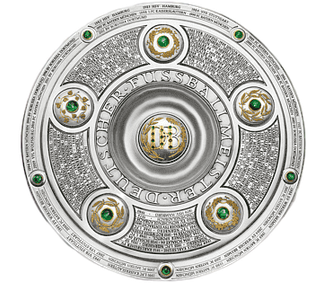
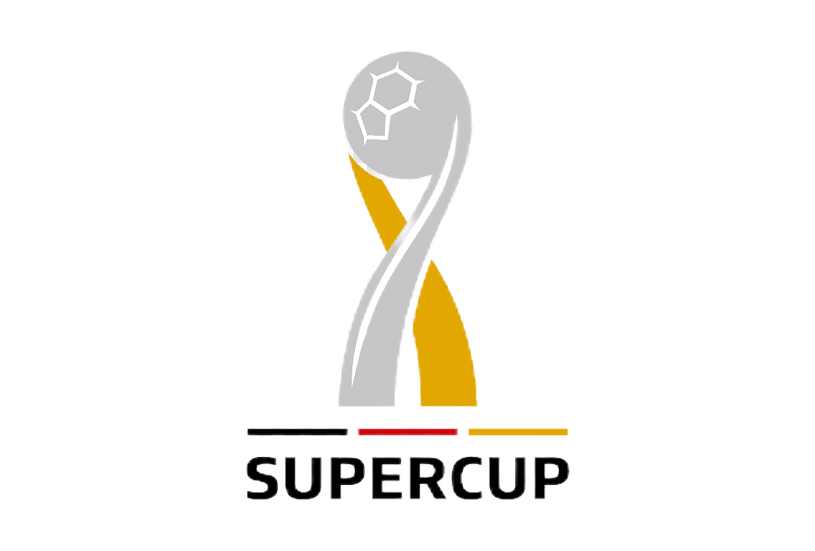
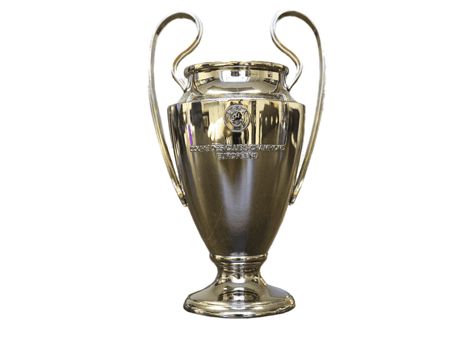
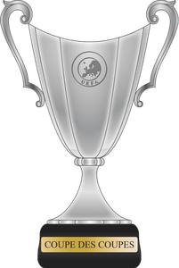

8x Campeón de Bundesliga: 1955/56 - 1956/57 - 1962/63 - 1994/95 - 1995/96 - 2001/2002 - 2010/2011 - 2011/2012

5x Campeón de la Copa Alemana: 1964/65 - 1988/89 - 2011/12 - 2016/17 - 2020/21

6x Campeón de la Supercopa Alemana: 1989/90 - 1995/96 - 1996/97 - 2013/14 - 2014/15 - 2019/20

1x UEFA Champions League: 1996/97

1x Campeón de la Recopa de Europa: 1965/66

1x Campeón de la Copa Internacional: 1997/98